История конкурсного прототипа: от учебных задач до работающего кабинета.
9 ноября 2026 года · Москва
Учёба, документы и связь с деканатом в одном месте. Собственный визуальный стиль, мобильные сценарии, игровой кампус и помощник по данным студента.
«МГИМО Мания» — конкурсный концепт, а не официальный сервис МГИМО. Все персонажи, оценки, группы, документы и учебные ситуации вымышлены.
Прототип: ai.neblanki.tech.
Исходники: temurysega/vibe_code.
Как читать документ. Для знакомства с продуктом достаточно раздела 1 и короткого маршрута жюри. Разделы 2–3 показывают работу с ИИ, раздел 9 — найденные ошибки и доработки, раздел 10 — результаты конкретных запусков. Подробные реконструкции заданий вынесены в приложение и отделены от исходных диалогов.
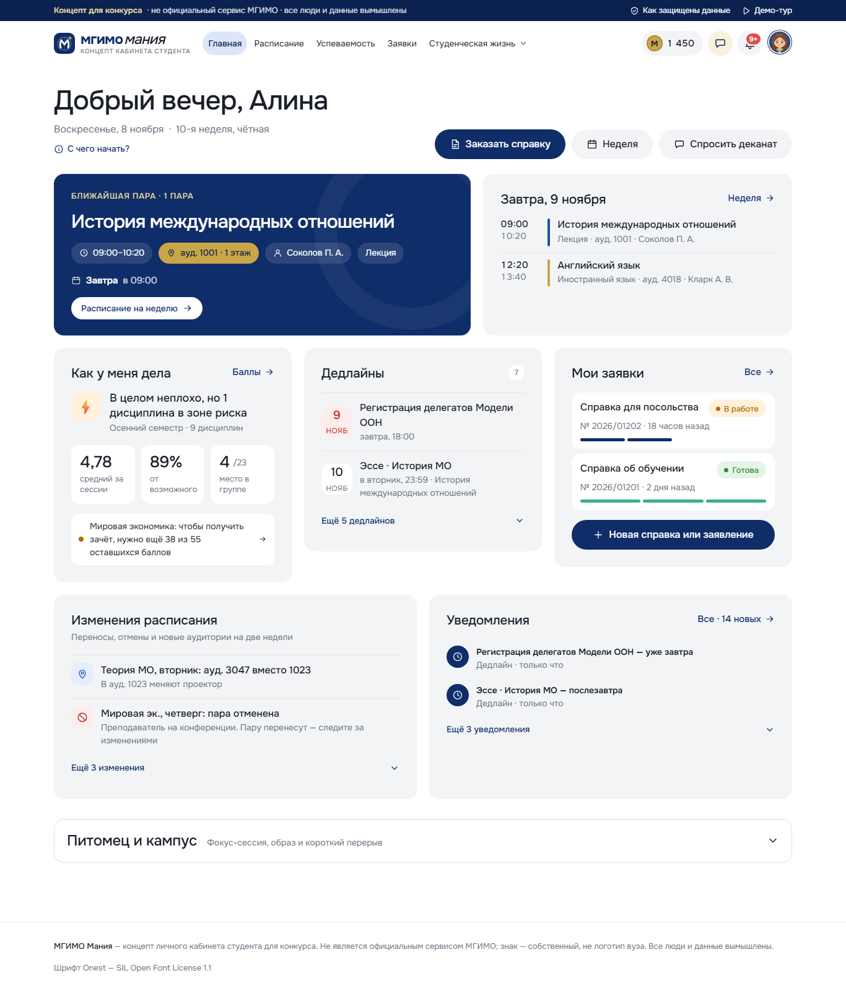
Студенту обычно приходится собирать учебную жизнь по частям: искать расписание, проверять оценки в другой системе, выяснять порядок получения справки и следить за объявлениями в чатах. Мы хотели собрать эти действия вокруг одного человека и одного понятного вопроса: «Что мне нужно знать и сделать сейчас?»
Поэтому ядром проекта стали пять связанных задач. В профиле хранятся данные для заявления. Изменение пары появляется и в расписании, и в уведомлениях. Учебный риск объясняется через баллы и следующий шаг. Заявка не заканчивается сообщением «отправлено»: студент видит её движение и результат решения деканата.
Технический тест подтверждает действие приложения. Понимает ли его студент и стало ли ему удобнее, нужно проверять отдельно. Поэтому для каждой идеи фиксируем оба вопроса.
| Гипотеза | Решение в прототипе | Что подтверждено проверками | Что проверить со студентами |
|---|---|---|---|
| Явный первый шаг помогает перейти от знакомства к действию | Кнопка «С чего начать» открывает диалог: расписание, оценки и справки; эти действия доступны и при первом знакомстве | Отдельные браузерные повторы — по 34/34. Со слов автора, два студента прежней версии не сразу нашли первое действие | Стало ли понятно первое действие без подсказки? Повторная проверка после правок ещё не проведена |
| При коротком визите важнее ближайшая пара и изменения | Главная с ближайшим занятием; день и неделя с аудиторией и переносами | Переходы, разные дни, экспорт календаря и экран 360 px | Найдёт ли человек нужную аудиторию и заметит ли перенос без подсказки? |
| Баллы полезнее, когда понятен следующий шаг | Порог, недостающие баллы и подробности дисциплины; переход к пересдаче | Формулы расчёта, фильтр риска, открытие подробностей | Сможет ли студент своими словами объяснить риск и выбрать действие? |
| Прозрачный статус сокращает неопределённость после заявления | Форма → решение сотрудника → история → уведомление → образец документа | Полный путь двух ролей, сохранение полей, получение документа | Понятно ли, кто сейчас обрабатывает заявку и что делать после готовности? |
| Объявление полезнее, когда ведёт к предмету сообщения | Персональные уведомления со ссылкой на заявку или расписание | Переход к нужной заявке, адресаты, сохранение прочитанного | Различает ли человек общую новость и событие, требующее его действия? |
| Необязательный игровой слой придаёт кабинету характер | Питомец, фокус-сессии и кампус; учебные разделы доступны напрямую | Наличие отдельных маршрутов; учебный путь проходит без игры | Помогает ли этот слой возвращаться в кабинет или отвлекает от основной задачи? |
Источники технических проверок: domain.test.js, security.test.js,
backend-regressions.test.js, browser-flows.py, browser-accessibility.py
и browser-home-priority.py. Даты и результаты конкретных запусков — в разделе 10.
Изоляция аккаунтов является обязательным требованием: сервер проверяет владельца,
а при смене входа форма и помощник получают данные нового студента.
Проблема взята из конкурсного задания. По уточнению автора, кабинет попробовали два студента. Обоим было понятно назначение сервиса и его возможности, но при переходе от знакомства к действию они не сразу поняли, с чего начать и куда нажать дальше. Оба в итоге разобрались. Имена участников не публикуются; исходные анкеты и измерения времени выполнения задач не представлены. Это качественная обратная связь со слов автора.
По этому замечанию реализована заметная кнопка «С чего начать» на главной. Она открывает диалог с прямыми переходами к расписанию, оценкам и справкам; его можно закрыть. При первом знакомстве эти действия заменили единственное предложение настроить аватар. Техническая проверка описана ниже. Повторное пользовательское тестирование после изменений не проводилось.
Следующая проверка с участниками должна использовать четыре задания без подсказок: найти изменённую пару, объяснить учебный риск, заказать справку и найти готовый документ. Для каждого задания нужно записать успех, места затруднений, время и слова участника; после основного пути отдельно спросить о пользе игрового слоя. Этот план пока не является результатом исследования. Автоматические проверки и уменьшение высоты страницы не доказывают сокращение времени выполнения задачи студентом.
Вторая часть идеи — ощущение собственного студенческого пространства. Аватар, питомец, виртуальный кампус и короткая игра дают кабинету характер. При этом расписание и справки доступны через обычную навигацию: для учебных действий не требуется играть или копить монеты. Связь игрового слоя с вовлечённостью — гипотеза концепта, а не доказанный образовательный эффект.
Ниже — предоставленный автором скриншот реального диалога с ассистентом об исходной задаче: сначала описать человека, обязательные действия и путь заявки, затем выбирать экраны.
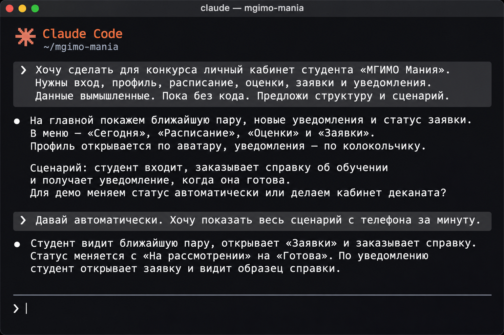
В обсуждаемом варианте статус справки меняется автоматически. В текущем прототипе сохранён демонстрационный план автоматического прохождения статусов и есть кабинет сотрудника с реальными действиями над заявкой. Проверенный сквозной сценарий использует именно действие сотрудника: оно записывается в историю и вызывает уведомление студенту. Так идея короткой демонстрации дополняется полноценным взаимодействием двух ролей.
В разработке, по словам автора, использовались Claude, Qwen и Codex. Документ объединяет это описание автора с тем, что можно проверить в проекте: историей Git, исходниками, сохранёнными результатами запусков и снимками браузера.
| Источник | Что он позволяет установить |
|---|---|
| Сведения автора | В работе использовались Claude, Qwen и Codex; автор ставил задачу и принимал решения о развитии проекта |
| Git | Состав и зафиксированную последовательность изменений, даты записей и атрибуцию соавторства |
| Исходники | Как устроены сценарии, защита, интерфейс и интеграция помощника |
| Журналы и реальные снимки | Что было выполнено в конкретном запуске и как выглядел проверенный экран |
| Карточки задач в этом документе | Развёрнутые реконструкции постановок по существующему коду и результатам; это не оригинальные чаты |
| Четыре скриншота диалогов | Предоставленные автором примеры реальной переписки об идее, заявке, мобильном интерфейсе и кампусе |
Переписка представлена четырьмя скриншотами. Отдельные развёрнутые карточки в приложении систематизируют требования и критерии приёмки по исходникам и результатам проверок; их происхождение указано в каждой карточке.
Автор предоставил четыре PNG с диалогами в Claude Code и Qwen Code и подтвердил, что это настоящие примеры переписки при работе над проектом. Исходные имена, размеры и SHA-256 неизменённых копий перечислены в манифесте скриншотов.
| Задача в реальном диалоге | Принятое решение | Где увидеть результат |
|---|---|---|
| Claude Code: предложить структуру и сценарий до написания кода | Пять учебных задач, главная с ближайшей парой, путь к справке | public/js/app.js, views/home.js, views/requests.js; шаги 2–3 маршрута жюри |
| Qwen Code: показать полный процесс и ограничить сотрудника факультетом | Две роли, очередь, история и уведомление о решении | server/routes/dean.js, server/domain/requests.js; сквозной browser-flows.py |
| Claude Code: на телефоне сначала пара, а оценку объяснять через порог | Учебные приоритеты на главной, недостающие баллы и следующий шаг по дисциплине | public/js/views/home.js, server/domain/grades.js; мобильные сценарии и карточка дисциплины |
| Claude Code: добавить питомца и кампус, сохранив прямой доступ к учёбе | Игровые разделы дополняют обычную навигацию | public/js/views/campus.js, home.js, game.js; расписание и заявки открываются без игры |
Скриншоты показывают постановки и обсуждение решений. Связанные файлы и проверки позволяют проследить их до текущего поведения приложения.
Первая версия кабинета создана за одну сессию Claude Code в приложении Claude (модель Claude Opus 5.5) 4 ноября, 20:49–22:13 МСК. Стартовым промптом был полный текст конкурсного задания. Дальше агент работал сам: создал 89 файлов, внёс 50 правок, выполнил 39 команд и около 75 действий во встроенном браузере — открывал разделы кабинета, проходил сценарии и проверял вёрстку на экране 360 px. Через веб-поиск агент уточнил фирменные цвета МГИМО, список факультетов и 100-балльную систему оценивания.
8 ноября проект проверяли и дорабатывали в Codex: сохранился 31 журнал сессий — основные сессии и сессии субагентов — с 46 постановками задач от автора и от основного агента субагентам. Из этих сессий взяты поручения и результаты, описанные в разделах 3 и 9. Журналы хранятся у автора локально и в репозиторий целиком не входят: в них есть служебные данные сервера.
Коммиты 4 ноября не отражают хронологию работы. В конце той же сессии агент написал
скрипт, который разложил готовый код на 629 последовательных коммитов по файлам
и функциям, сверил итоговое дерево с резервной копией и отправил историю в GitHub.
Все 629 коммитов созданы за 2 минуты 21 секунду (22:09:47–22:12:08). Поэтому они
показывают устройство кода — от каркаса и модели данных к логике и интерфейсу, —
а не время, потраченное на каждую часть. В них есть трейлер Co-Authored-By с именем
Claude; это атрибуция в репозитории, а не независимое подтверждение текста промптов.
Начиная с 8 ноября каждый коммит — отдельная реальная итерация: аудит и исправления, интеграция OpenRouter, публикация, возврат посетителей прежнего сайта, доработка интерфейса. Полный экспорт — в git-history.json.
| Этап | Примеры коммитов | Что можно увидеть в проекте |
|---|---|---|
| Устройство кода, разложенное 4 ноября | 9c74eef, 832c17b, 5b9088a, aea48ab |
Каркас Node.js, схема SQLite, расписание, успеваемость, заявки, стили |
| Аудит и доработка, 8 ноября | 00882b7 |
Исправления сценариев, интеграция OpenRouter, тесты и документы |
| Публикация, 8 ноября | 969bdf4, 2e48826 |
Конфигурация сервиса и результаты приёмки |
| Возврат посетителей прежнего сайта, 8 ноября | 6376d05, e3ac392 |
Исправление старого офлайн-кеша и браузерный сценарий |
| Доработка по критериям, 8–9 ноября | 19e9672, 0e3d1c3, a1aff22 |
Первые действия, мобильный интерфейс, ограничения демо-стенда |
Роль автора состояла в выборе задачи и продукта, передаче критериев конкурса, обратной связи по результатам и решениях о демонстрации. В подтверждённом позднем этапе автор предложил OpenRouter, предоставил настройки доступа к провайдеру, отложил необязательный ролик и сообщил, когда после публикации открылся старый сайт. Ключи и другие секреты в этот документ не включаются.
Codex использовался для согласованной работы над кодом, проверками и материалами. Работа была разделена между основным ассистентом и тремя направлениями субагентов.
| Направление | Задача | Проверяемый результат |
|---|---|---|
| Основной ассистент | Сопоставить проект с заданием, распределить файлы и проверить интеграцию | AGENTS.md, скрипт collect-evidence.py, общий журнал run-summary.json |
| Сервер и безопасность | Проверить доступ, заявки, сеансы, сохранение и ошибки | server/routes/, server/security/; регрессии персональных дедлайнов, параллельного входа и дат в backend-regressions.test.js |
| Интерфейс | Пройти основные экраны, мобильные сценарии, клавиатуру и смену аккаунта | public/; очистка состояния после выхода, восстановление после ошибки, браузерные сценарии и снимки |
| Документы | Сверить описание с кодом, уточнить лицензии и собрать историю | PROCESS.md, THIRD_PARTY.md, SUBMISSION.md; реальные диалоги, команды и результаты по этапам |
В AGENTS.md закреплены структура каталогов, шесть инвариантов и правила проверки.
Например, пользователя определяет серверная сессия; смена аккаунта очищает кеши;
основной кабинет работает без внешнего ИИ; новые заявки сохраняются после перезапуска.
Перед параллельными правками распределяется владение файлами.
В сохранённом описании позднего этапа приведены конкретные выдержки задач:
«Проверь изоляцию минимум двух студентов, роли деканата, сессии/CSRF, основные сценарии заявок и расписания, персистентность, ошибки; запускай имеющиеся тесты».
«Проверь сценарии login/profile/schedule/grades/requests/notifications, мобильные 360px, доступность, ошибки/пустые состояния, явную маркировку конкурсного концепта/вымышленных данных».
Полные новые карточки ниже шире этих выдержек. Каждая прямо обозначена как реконструкция. Их текст также доступен в PROMPTS.json, чтобы его можно было прочитать без увеличения изображения.
Для конкурсного прототипа выбран небольшой стек: Node.js с серверными модулями HTTP, SQLite и криптографии; в браузере — ES-модули без сборки. Данные и правила остаются на сервере. Интерфейс получает JSON, показывает состояние и отправляет действия.
В маршрутах находятся проверки роли и входных данных. Предметная логика отдельно собирает расписание, считает учебные показатели и проводит заявку через статусы. SQLite хранит профили, сеансы, заявки, уведомления и игровой прогресс. Такое разделение помогает проверять правила без браузера и менять интерфейс без переписывания прав доступа.
Что получилось. Пять обязательных задач связаны общими сущностями, а роли студента и деканата разделены на сервере. Выбранная архитектура подходит для работающего демо. Горизонтальное масштабирование потребует отдельной работы с хранилищем, общими лимитами и фоновыми задачами; оно не заявляется как готовая возможность.
В расписании важна не только таблица, но и исключения из неё. Поэтому регулярные занятия и изменения хранятся раздельно: отменённая пара или новая аудитория отражаются при сборке конкретной недели. Время рассчитывается по Москве, независимо от расположения сервера.
В успеваемости мы показываем не только итоговую цифру. Контрольные точки, прогноз, учебный риск и пороги помогают понять положение по дисциплине. Сессия и зачётка собраны рядом, чтобы студенту не требовалось искать их в другом сервисе.


Инженерная итерация. При проверке выяснилось, что персональный дедлайн с указанной группой мог попасть в выборку другого студента. Условия отбора уточнили в API, уведомлениях и контексте помощника. Для длинной истории исправили «прочитать все»: действие теперь не ограничивается первой загруженной частью списка. Оба случая проверяются регрессионными тестами.
Путь заявки построен по модели отслеживания: студент понимает, что отправлено, какой сейчас статус и что было сделано. Форма подставляет учебные сведения из профиля. Сотрудник видит очередь своего факультета, принимает решение и оставляет комментарий. Студент получает уведомление и видит запись в истории.
Для такого сценария важно разделить два решения: что видит студент после отправки и кто вправе изменить статус. Следующий диалог с Qwen Code показывает постановку задачи через две роли и ограничение факультетом. Реализованные роли и переходы проверяются по коду и сквозному тесту.
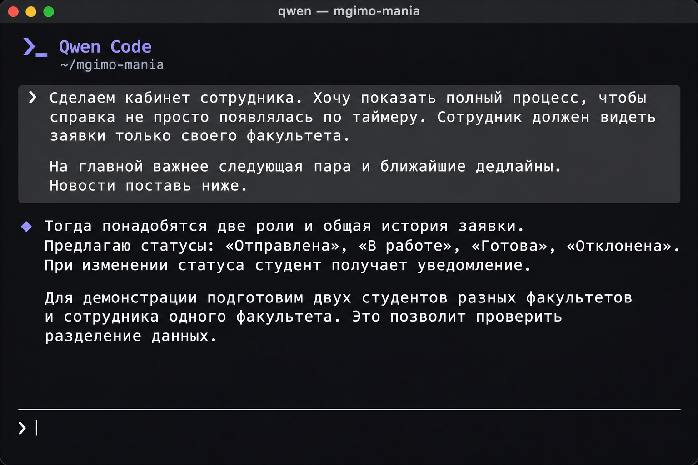
В реализации список статусов шире обсуждённого в этом фрагменте: есть также выдача, одобрение и отмена; допустимый путь зависит от вида документа. Уведомление связано с конкретным номером заявки, а сотрудник ограничен своим факультетом. Эти детали превращают демонстрацию в проверяемый процесс с владельцем, действием и результатом.
У электронного образца есть код и ссылка проверки. Его можно сохранить в PDF через печать браузера. Образец явно обозначен как демонстрационный документ без электронной подписи — он не выдаётся за официальную справку университета.

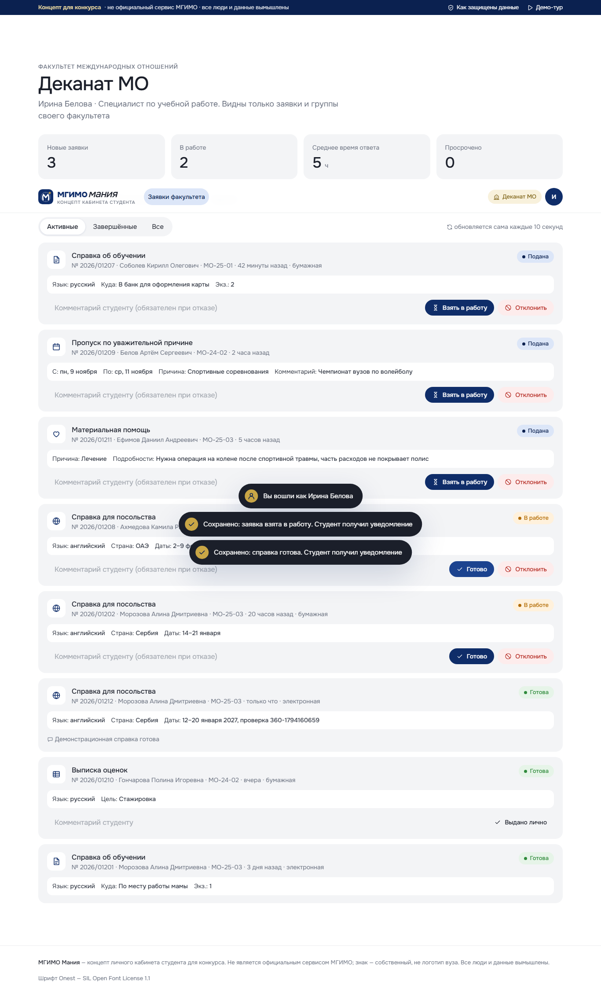
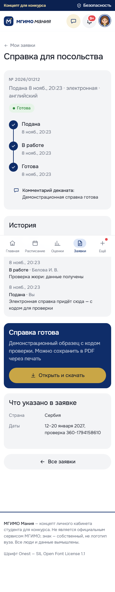
Пароль сравнивается с хешем scrypt и случайной солью. После входа браузер получает случайный идентификатор сеанса в HttpOnly-cookie; сервер хранит его хеш. В HTTPS-режиме cookie передаётся только по защищённому соединению. Изменяющие запросы проверяются по CSRF-токену и источнику Origin.
Номер заявки в адресе не определяет право доступа. Сервер проверяет владельца по сеансу; для сотрудника дополнительно ограничивает факультет. Подмена номера не открывает чужой документ. После смены аккаунта очищаются данные интерфейса и кеши модулей, включая автозаполнение формы.
В итоговой локальной версии справка о стипендии получила таблицу шести завершённых месяцев, суммы по месяцам и общий итог вместо общего утверждения о назначении выплаты. Нулевые начисления обозначены отдельно. Все суммы — демонстрационные, что явно указано в документе; проверяются арифметика, оформление на двух ширинах и сохранение в PDF.

Инженерные итерации. Исправлены кеш профиля предыдущего пользователя, нормализация невозможных дат и обход последовательного счётчика неверных входов параллельными запросами. Автоматический сброс демонстрационной базы выключен по умолчанию, чтобы созданные изменения не исчезали. Декоративный рисунок, похожий на QR, заменён честной ссылкой и кодом проверки.
Проект использует светлые карточки, тёмно-синий и золотой акценты, единые поля и кнопки. Шрифт Onest хранится локально вместе с лицензией. Собственный знак, аватар, питомцы и кампус реализованы SVG; короткий раннер — Canvas. Отдельная генерация растровых картинок для интерфейса приложения не подтверждается и не заявляется. Предоставленные автором скриншоты диалогов используются только в этом документе.
Визуальные решения подчинены порядку действий. Ближайшее занятие и срочные задачи нужны при коротком визите с телефона; подробности дисциплин и история документов — при более долгой работе. Поэтому ключевые сведения видны на главной, а дополнительное содержимое раскрывается по запросу. Названия действий и текстовые статусы дополняют иконки и цвет. Одинаковые карточки, поля и кнопки сокращают необходимость заново разбираться в каждом разделе.
В следующем диалоге замечание об интерфейсе превращается в конкретную задачу: поменять приоритеты блоков и объяснить балл через учебный порог. Измерения изменений интерфейса приведены ниже, а снимки готового кабинета получены браузерными сценариями.
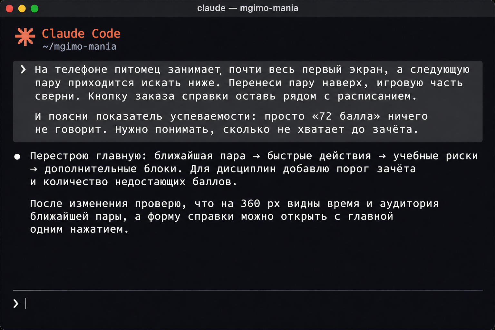
Главная помогает быстро найти ближайшую пару, срок и нужное действие. На телефоне сохраняются те же учебные сценарии. Игровой кампус добавляет альтернативный способ перейти в раздел, а фокус-сессии связывают питомца с учебным контекстом.
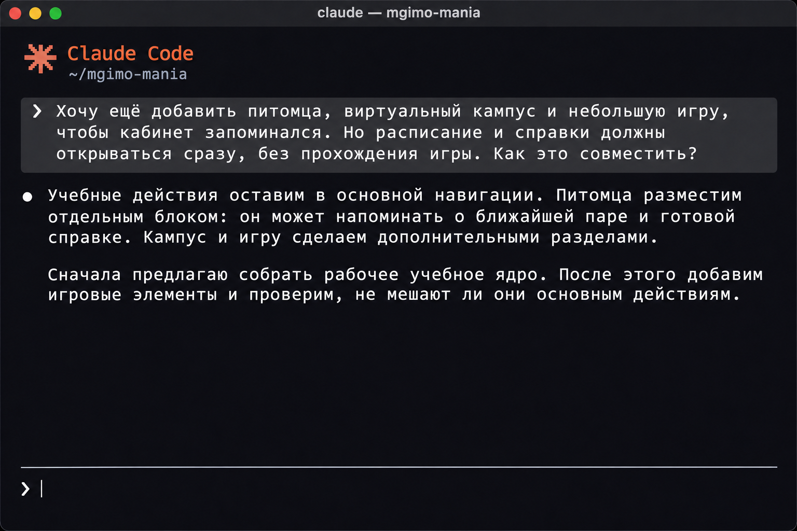
В продукте кампус даёт дополнительный путь к разделам, а питомец и короткая игра создают узнаваемый образ кабинета. Доступ к расписанию и заявкам не зависит от игрового прогресса. Проверяемое ограничение здесь — возможность выполнить учебную задачу обычной навигацией, даже если человек ни разу не открывал игру.
Второстепенные списки и игровой блок на телефоне сворачиваются, сохраняя доступ по нажатию и с клавиатуры. Ближайшая пара, учебная ситуация и действие со справкой остаются в основном учебном пути. Итерации и измерения описаны в разделе 9.
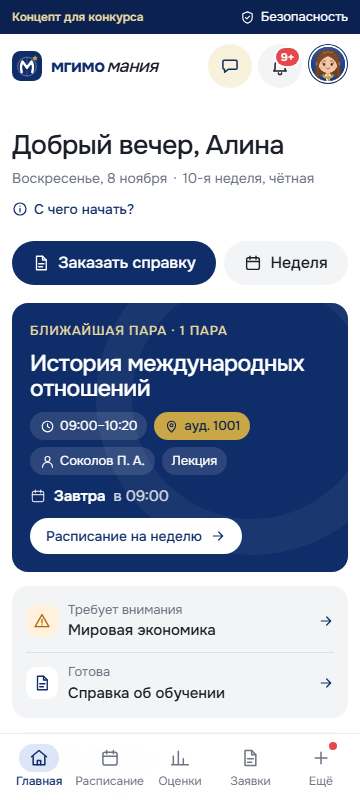
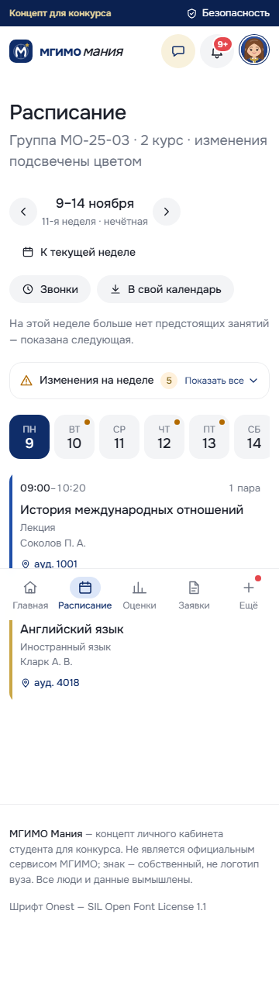
Инженерная итерация. В части разделов кнопка повторной загрузки не запускала запрос. Добавлен общий обработчик восстановления. Отдельно проверяются подписи полей, переход к основному содержимому, фокус в обычном и вложенном диалоге, Tab/Shift+Tab, Escape, управление днями расписания и настройка уменьшения анимаций.
Использование ИИ для разработки и ИИ-помощник в приложении — две разные части проекта. Первое описывают история работы и постановки задач. Второе — конкретная пользовательская функция: получить краткий ответ по своему расписанию, группе, срокам или заявкам.
Помощник получает ограниченный контекст вошедшего студента. Вызов провайдера идёт только с сервера; ключ не передаётся браузеру. Модель не получает инструменты изменения оценок и решений деканата. При отсутствии ключа, ошибке или тайм-ауте работают встроенные правила, а источник ответа показан пользователю.
Контракт внешнего API проверяется подставными ответами, включая ошибки и отсутствие полезного текста. Ранее, при публикации 8 ноября, отдельно выполнены живые запросы OpenRouter для двух студентов. Ответы о группе совпали с их профилями; история прошлого аккаунта не появилась в новом сеансе. Эти результаты сохранены в assistant-browser-live.json.

При первом подключении провайдер отклонил ключ с HTTP 401. Этот ответ не был принят за успешную интеграцию. После замены ключа в серверном окружении запрос прошёл; значения ключей не сохранялись в материалах. Успех конкретных запросов не является гарантией точности будущих ответов модели.
Задачу ИИ формулировали через наблюдаемое поведение. Недостаточно написать, что «сохранение работает»: нужно создать заявку, открыть ту же базу после перезапуска и сравнить данные. Недостаточно показать красивую форму: нужно отправить её, обработать в деканате и получить результат под исходным аккаунтом.
| Обнаруженная проблема | Что изменили | Как это проверяется |
|---|---|---|
| Автозаполнение сохраняло профиль после смены аккаунта | Очистка модульного кеша и состояния | Два разных входа в одной вкладке |
| Персональный дедлайн мог попасть другому студенту той же группы | Уточнение условий видимости | Сравнение API, уведомлений и контекста помощника |
| Параллельные неверные входы обходили счётчик | Резервирование попытки до проверки пароля | Одновременные запросы входа |
| «Прочитать все» оставляло часть истории непрочитанной | Обработка всей доступной истории | Длинная история уведомлений |
| Невозможная дата превращалась в другую дату | Строгая календарная проверка | Некорректные даты и недели |
| Повторная загрузка не работала в части экранов | Общий обработчик восстановления | Ошибка 503, затем нажатие «Повторить» |
| Старый сайт открывался после смены приложения на домене | Миграция прежнего service worker | Старый worker, две вкладки, сохранение других данных |
После публикации автор увидел на домене прежнее приложение, которое раньше работало по этому адресу. Первые проверки проходили в чистых браузерных профилях и не покрывали возвращение прежнего посетителя. Сервер уже отдавал новый кабинет, но установленный service worker возвращал старую страницу из офлайн-кеша.
Исправление оставили по прежнему адресу /sw.js: оно удаляет только кеши старого
приложения, снимает прежнюю регистрацию и переводит открытые вкладки на актуальную
страницу. Новым посетителям офлайн-worker не устанавливается. Добавлена отдельная
регрессия с двумя вкладками и проверкой сохранения других кешей, cookie и localStorage.
Это пример изменения самого плана проверки после обратной связи. Успешный набор тестов покрывает перечисленные сценарии, но не означает, что неизвестных ошибок нет.
После оценки проекта по конкурсным критериям автор попросил добавить четыре изображения и улучшить работу. Ассистент разделил задачи между документацией, интерфейсом и проверкой публикации; владение файлами определили до правок. Выдержки фактических поручений этой итерации сохранены в review-session.json. Они относятся к этой доработке и дополняют четыре предоставленных автором скриншота диалогов.
На сохранённом снимке страница успеваемости шириной 360 px имела высоту 4355 px. Все девять дисциплин показывались подробными карточками. После доработки баллы, форма контроля, статус и прогноз остались в компактном обзоре, а контрольные точки, преподаватель и рекомендации открываются по нажатию на дисциплину. Добавлен фильтр «Требуют внимания» с числом результатов и управлением клавишами Enter и Space.
Повторный браузерный проход измерил 2936 px вместо 4355 px — на 32,6% меньше. Это высота страницы на конкретных демонстрационных данных, не измерение скорости чтения реальными студентами. При фильтре риска высота составила 1934 px. Все девять дисциплин доступны через «Все», подробности открываются с клавиатуры, а при смене студента фильтр сбрасывается. На компьютере сохранены подробные карточки.
Снимки для сравнения: до и
после первой итерации. Прежний протокол сохранён в
evidence/review-before/; измерения и 40 проверок этой итерации — в
browser-review.json.
В верхнем меню оставили четыре основных учебных направления. Кампус, гардероб, лавка и игра доступны из «Студенческой жизни»; проверены переход, Escape и возврат фокуса. Короткие карточки главной больше не растягиваются по самому длинному списку, а подписи нижнего меню на телефоне увеличены с 10 до 11 px.
После повторной оценки автор попросил улучшить проект и передать изменения в Git. Основной ассистент разделил работу между главной страницей, успеваемостью и документами; сам доработал форму заявки и общий прогон. Поручения, владение файлами и уточнения автора записаны в quality-session.json.
На мобильной главной ближайшая пара больше не повторяется в развёрнутом списке дня. Сразу после неё доступны два действия: открыть учебный риск или состояние заявки. У первокурсника без заявок второе действие ведёт к первой справке. В проверенном окне 360 × 800 px оба действия занимают область 554–678 px и помещаются над нижним меню; список остальных занятий раскрывается ниже. На компьютере весь день виден сразу. Проверены переходы к конкретной дисциплине и заявке, пустой день, клавиатура и смена аккаунта: 28/28 проверок.
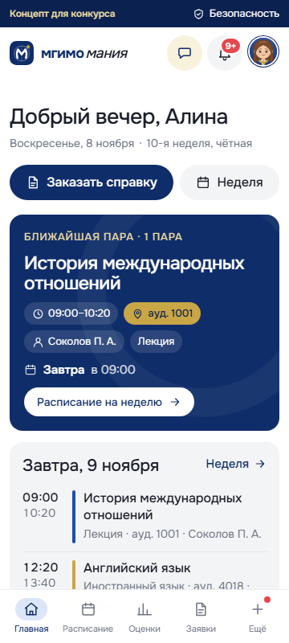

В успеваемости расширенная статистика на телефоне раскрывается по запросу. Все оценки, посещаемость, рейтинг и стипендия сохранены; на компьютере обзор открыт сразу. Высота страницы на том же демонстрационном профиле уменьшилась с 2936 до 2096 px (на 28,6%). Фильтр поднялся примерно с 1320 до 480 px, первая дисциплина — с 1447 до 607 px и теперь целиком помещается над нижним меню. Полная статистика открывается клавишами Enter/Space; подробности дисциплины и фильтр сохраняют корректный фокус. Подписи нижнего меню увеличены до 12 px. Источники: исходные измерения, 31/31 проверка и новые измерения. Это измерения страницы, а не скорости работы реальных студентов.
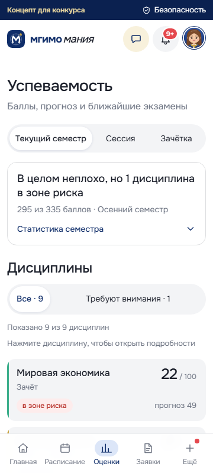
В форме справки имя и группа остаются видимыми, дополнительные сведения профиля раскрываются отдельно; электронный и бумажный форматы стоят рядом. Высота сохранённого снимка прежней формы — 2195 px, текущая высота страницы в браузере — 1925 px. Первое поле начинается на 722 px. Проверено, что сворачивание профиля сохраняет введённые поля, формат выбирается с клавиатуры, а после смены аккаунта заменяются и видимые, и скрытые сведения: 19/19 проверок. Сравнение формы: предыдущий снимок и текущий снимок.
После анализа по четырём критериям автор поручил: «давай вот все поправим и зальем сайт и на github тоже все зальем». Постановка и распределение работы сохранены в finalization-session.json. Это запись текущей работы, а не восстановление раннего диалога.
| Исполнитель | Порученная область | Условие завершения |
|---|---|---|
| Основной ассистент | Главная, читаемость, общие проверки и GitHub | Проверить совместную работу изменений и зафиксировать отправленную ревизию |
| Агент расписания | Экран расписания, его стили и при необходимости отдельная проверка | Подтвердить затронутые действия на 360 px и обычном экране |
| Агент публикации | Подготовить и затем обновить существующий VPS | Сохранить базу; проверить опубликованную версию и записать результат |
| Агент документации | Обоснование продукта, происхождение материалов и краткий путь жюри | Разделить гипотезы и наблюдения; согласовать описание с подтверждёнными результатами |
В ходе этой работы автор уточнил отзывы двух студентов. Их затруднение с первым действием стало основанием для блока «С чего начать».
На главной реализованы компактные списки и необязательный игровой блок; при активной фокус-сессии он раскрывается. Высота страницы на 1366 px уменьшилась с 2825 до 1614 px. Мобильные приоритетные действия остаются в первом экране. Недельное расписание на обычном экране показывает три колонки и даёт доступ ко всем изменениям.
Кнопка «С чего начать» открывает три учебных действия и поддерживает закрытие диалога. При первом знакомстве те же действия доступны сразу. Это ответ на конкретное замечание двух участников, но повторной проверки с ними после доработки пока нет.
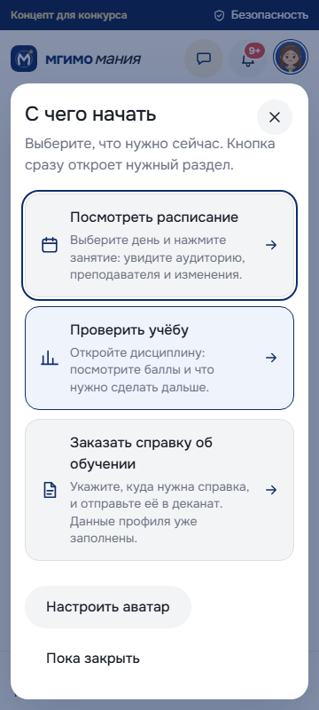
Итог итерации: 35/35 автотестов и 367/367 браузерных проверок локально, затем публикация на стенд и 194/194 браузерные проверки уже на HTTPS-версии (раздел 10).
Автор попросил проверить всё сделанное по четырём критериям конкурса. Аудит вёл новый ассистент — Claude Code, — не участвовавший в предыдущих итерациях. Он прочитал код и документы, запустил тесты, прошёл кабинет своими браузерными сценариями на 360 и 1366 px, проверил изоляцию данных прямыми запросами к API и сверил архив исходников с Git. Вывод: ядро и безопасность в порядке, а замечания касаются деталей интерфейса, поведения общего демо-стенда и подачи материалов. После этого автор поручил: «давай все правки сделаем чтобы дотянуть до 10… и также запушить в git».
| Что нашёл аудит | Почему это важно | Что изменили | Как проверено |
|---|---|---|---|
| На экране входа при 320–414 px плашка «Справка готова» наезжала на подзаголовок | Первый экран, который жюри видит с телефона | Плашки ниже подзаголовка с запасом на анимацию | Промежуток измерен на ширинах 320–1366 px во всех фазах анимации |
| Ссылки «Баллы», «Все» и кнопка «Безопасность» — 20–23 px в высоту | Трудно попасть пальцем | Невидимая область нажатия 34–45 px без сдвига вёрстки | Нажатие на 8 px выше ссылки открывает раздел |
| Лента уведомлений на телефоне — около 4900 px | Настройки и важное теряются внизу | Порции по 12 с кнопкой «Показать ещё», фокус на первой новой карточке | Браузерный сценарий: число карточек, фокус, сброс при смене фильтра |
| Чужая заявка показывала общее «Не найдено» | Маршрут жюри обещал «Заявка не найдена» | Заголовок берётся из ответа сервера | Вход другим студентом по сохранённой ссылке |
| Электронная справка сама становилась готовой через 70 секунд | Жюри не успевало принять решение в кабинете деканата | Демо-автоматика — около 8 минут; ускорение только в браузерных тестах | Регрессионный тест времени и отключения автоматики сотрудником |
| Публичный аккаунт деканата мог бесконечно публиковать объявления всем студентам МО | Общий стенд для всех экспертов | 10 публикаций за 10 минут, затем 429 | Регрессионный тест лимита |
| CSP разрешала Google Fonts, хотя шрифт локальный | Лишнее разрешение в политике | Только свой домен для стилей и шрифтов | Тест заголовков |
| В документах — внутренние детали сервера и устаревшие формулировки | Жюри читает материалы, а не журнал администратора | Документы сокращены; история Git описана честно | Ссылки и тексты сверены с кодом |
Новые проверки закреплены в test/dean-limits.test.js и браузерном сценарии
test/browser-audit-fixes.py. Ошибки самого ассистента в этой итерации тоже записаны:
Итог итерации: 37/37 автотестов и 381/381 браузерных проверок на свежих базах в одном запуске, без повторов (сводка).
Каждая проверка запускается на новой временной базе, без пользовательских данных и без
внешнего ИИ: python scripts/collect-evidence.py --output <папка>. Сборщик сохраняет
журналы команд, JSON-отчёты и снимки экранов. Неуспешные попытки не удаляются: они лежат
рядом с успешными и показывают, что именно исправлялось.
| Набор | Пройдено | Журнал |
|---|---|---|
| API, безопасность и предметная логика | 37/37 | unit-tests.txt |
| Экраны на 360 и 1366 px | 52/52 | browser-smoke.txt |
| Путь заявки двух ролей, смена аккаунта, изоляция | 36/36 | browser-flows.txt |
| Клавиатура, фокус, восстановление после ошибок | 23/23 | browser-accessibility.txt |
| Мобильные доработки и состояния расписания | 21/21 | browser-polish.txt |
| Справка о стипендии: заявка, таблица, PDF | 45/45 | browser-stipend.txt |
| Компактные оценки, фильтр риска, меню | 40/40 | browser-review.txt |
| Главная: приоритеты и переходы | 31/31 | browser-home-priority.txt |
| Успеваемость: первый экран и статистика | 31/31 | browser-grades-compact.txt |
| Форма справки: профиль, формат, смена аккаунта | 19/19 | browser-request-compact.txt |
| Читаемость расписания | 35/35 | browser-schedule-readability.txt |
| «С чего начать»: первые действия | 34/34 | browser-first-actions.txt |
| Правки 9 ноября: вход, нажатия, уведомления, чужая ссылка | 14/14 | browser-audit-fixes.txt |


| Когда | Что проверялось | Результат | Материалы |
|---|---|---|---|
| 8 ноября, первый аудит | API, сквозные сценарии, клавиатура и восстановление после ошибок | 30/30 автотестов, 111/111 браузерных проверок | экраны, действия, доступность |
| 8 ноября, первая публикация | HTTPS-стенд; сохранение после перезапуска контейнера; возврат посетителей прежнего сайта | 117/117, заявка пережила перезапуск, миграция service worker 15/15 | стенд, сохранение, миграция |
| 8 ноября, 20:23–20:28 | Компактные оценки и меню; публикация | 35/35 и 215/215 локально, 52/52 и 40/40 на HTTPS | локально, HTTPS |
| 8 ноября, 20:57–21:00 | Главная, успеваемость, форма справки | 35/35 и 293/293 | сводка |
| 8 ноября, 21:44–21:55 | «С чего начать», расписание; публикация | 35/35 и 367/367 локально*, 194/194 на HTTPS, живой ИИ 2/2 | локально, HTTPS, ИИ |
| 9 ноября | Доводка после независимого аудита | 37/37 и 381/381 | сводка |
* 333 проверки общего запуска и 34 проверки повтора одного сценария после исправления
ожидания в тесте. Неуспешные попытки сохранены в evidence/finalization-first-attempt/,
finalization-schedule-attempt/, finalization-first-actions-attempt/,
finalization-first-actions-retry/ и deployment/review-browser/browser-review-first-attempt.json.
Во всех этих случаях ошибкой было ожидание в тесте, а не поведение кабинета.
В PDF вложены полные журналы и JSON-отчёты, тексты реконструированных заданий, экспорт
истории Git и записи поручений субагентам. Вложения открываются в PDF-ридере с поддержкой
прикреплённых файлов; те же файлы лежат рядом с документом в репозитории. Карточки журналов
и заданий создаются скриптом scripts/render-process-evidence.py.
Полное соответствие стандартам доступности и предел нагрузки не заявляются: у каждой проверки есть конкретные границы, они описаны в CONTEST_AUDIT.md.
| Инструмент или технология | Задача | Связанный результат и материалы |
|---|---|---|
| Claude Code в приложении Claude (модель Claude Opus 5.5) | 4 ноября — первая версия кабинета по тексту задания: структура, сервер, интерфейс, самопроверка во встроенном браузере; 9 ноября — независимый аудит по критериям и доводка | Журнал сессии 4 ноября (раздел 2), скриншоты диалогов 01, 03, 04; итерация 9 ноября в разделе 9 |
| Qwen / Qwen Code, через терминал | Полный путь заявки, роль сотрудника и ограничение факультетом | Скриншот диалога 02; очередь в views/dean.js, переходы статусов и серверная проверка факультета |
| Codex и субагенты | Аудит, исправления, браузерные проверки, интеграция и документы | Инструкции AGENTS.md, поручения в review-session.json и quality-session.json, регрессии и сравнение мобильной версии до/после |
| OpenRouter | Ответы помощника по учебным данным вошедшего студента | server/routes/assistant.js, domain/assistant.js; сохранённые живые запросы двух аккаунтов и тесты резервного ответа |
| Anthropic SDK | Альтернативный серверный провайдер помощника | Зависимость и реализация в коде; сохранённые живые проверки относятся к OpenRouter |
| PowerShell, Git, ripgrep | Чтение проекта, поиск, история и запуск команд | Исходники, история Git и команды проверки |
Node.js, SQLite, node:test |
Приложение, данные и автоматические тесты | package.json, server/, test/ |
| Python, Playwright, Chromium | Проверка браузерных сценариев, снимки, подготовка PDF | Тестовые сценарии и скрипты сборки документа |
| SVG, Canvas, CSS | Собственная графика, игровые сцены и оформление | public/js/art/, public/js/campus/, public/js/game/, public/css/ |
| Onest / Google Fonts | Локальный шрифт интерфейса | Файлы шрифта и лицензия OFL в репозитории |
| Docker Compose и Caddy | Ранее выполненное размещение и HTTPS | Конфигурация и сохранённый протокол публикации |
Claude Code работал в приложении Claude со встроенным браузером для самопроверки, Codex — с субагентами, между которыми заранее делилось владение файлами; по словам автора, Qwen Code запускался в терминале. Таблица связывает инструменты с задачами и конкретными результатами.
Автор определял цель и ограничения, предоставлял требования, выбирал направление развития, давал обратную связь и настройки для публикации. На подтверждённом позднем этапе ассистенты выполняли чтение и изменение файлов, запуск команд, тестирование и подготовку материалов. По словам автора, кабинет попробовали два студента; их замечание о непонятном первом действии привело к доработке начальных подсказок. Измерения времени и исходные анкеты не представлены; повторной проверки после правок нет.
Сторонние материалы перечислены в THIRD_PARTY.md. В процессе проверки исправлена ошибочная запись лицензии SDK Anthropic: установленный пакет использует Apache-2.0. Код проекта распространяется под MIT, шрифт Onest — под OFL.
«МГИМО Мания» показывает законченный путь: войти под вымышленным студентом, увидеть учебную ситуацию, подать заявление, обработать его в деканате и вернуться к результату. Мобильный кабинет выполняет те же основные задачи. Собственные графика и игровые элементы формируют образ продукта, а помощник позволяет задать вопрос по учебным данным.
Для демонстрации подготовлены три разных студента и сотрудник деканата. Общий пароль
mgimo2026 предназначен только для этих публичных вымышленных аккаунтов.
| Логин | Что показать |
|---|---|
a.morozova |
Учебный риск, изменения пар и справки студентки МО |
t.aliev |
Другой факультет, профиль первокурсника и первый заказ справки |
k.lebedeva |
Академический долг и запись на пересдачу |
dekanat.mo |
Очередь заявок своего факультета и решение по заявлению |
Встроенный «Демо-тур» знакомит с экранами. Маршрут жюри дополняет его полным циклом с двумя ролями, названиями кнопок и ожидаемыми результатами.
Материалы, которые можно проверить: исходники, метаданные Git, развёрнутые реконструкции задач, четыре скриншота реальных диалогов, снимки интерфейса, автоматические и браузерные сценарии, сохранённые журналы и пример демонстрационного документа. Видео по условиям конкурса необязательно и пока не приложено.
Шесть карточек раскрывают требования и способы проверки по этапам. На каждой указано происхождение текста; оригинальные чаты ими не заменяются. Полный текст доступен также во вложенном PROMPTS.json.
Реконструкция задания по исходникам, не оригинальная переписка.
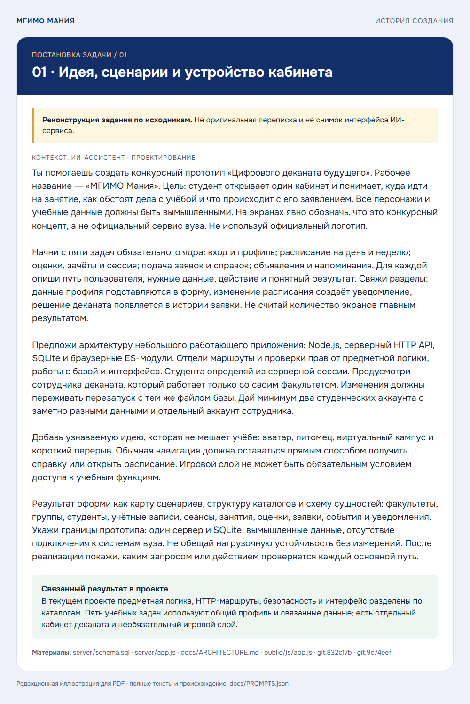
Реконструкция задания по исходникам, не оригинальная переписка.

Реконструкция задания по исходникам, не оригинальная переписка.
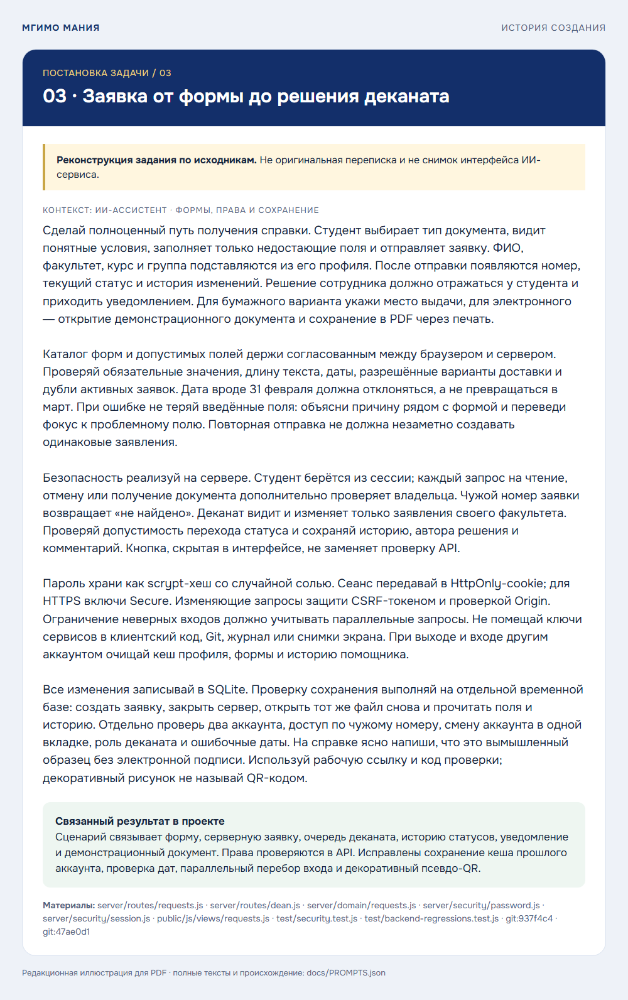
Реконструкция задания по исходникам, не оригинальная переписка.
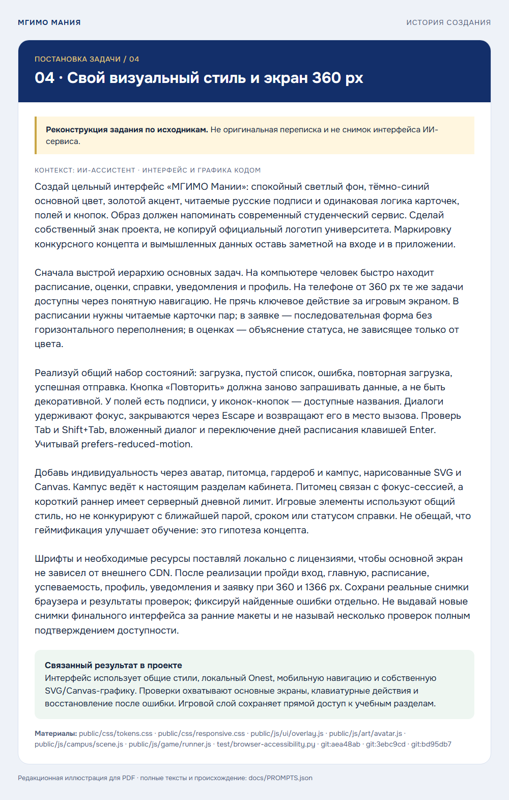
Реконструкция задания по исходникам, не оригинальная переписка.

Реконструкция задания по исходникам, не оригинальная переписка.